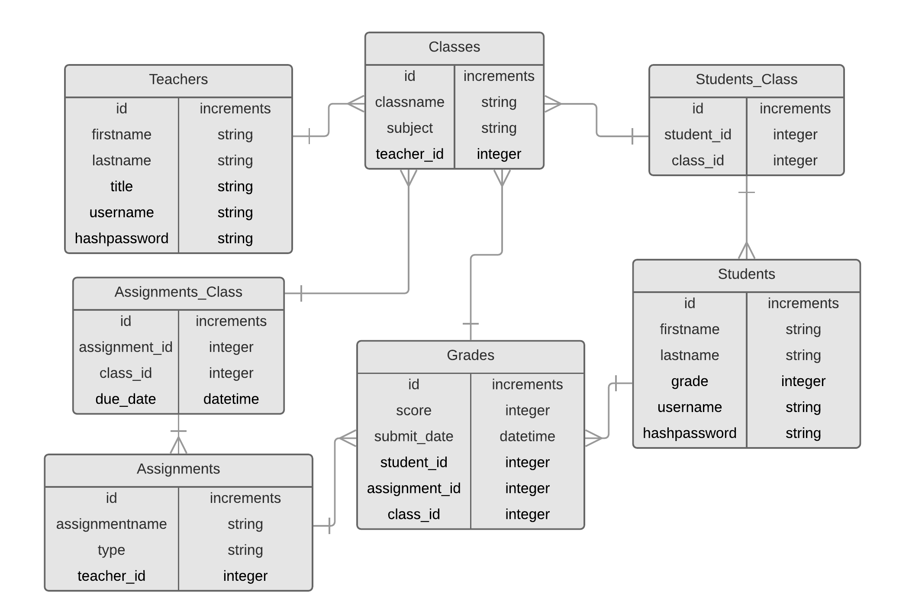

ScoreKeeper
Capstone Project
Rachel Cavin
The Problem
Most teachers use paper or spreadsheets for grading, storing, and creating assignments.
Ineffeciencies in the scoring and assesment process robs time they could allocate to instructional design.
Research indicates of those who go into teaching, 40-50% are gone within 5 years.
ScoreKeeper
Early stage product that aims to reduce the time teachers spend on assessment and scoring.
Gradebook functionality for managing grades, students, courses, and assignments.
Future plans include automatically graded assessments, rubric creation and grading, and better student progress monitoring systems.
Features
Gradebook
Roster
Assignments Manager
Class Manager
Student Grade View
Student Credentials Manager
Demo
Tech Stack


Database Design
Technical Challenges
Complexity of Database - required research and practice with multijoins.
State Management - challenging updates in tables.
Authentication - two login options made this extra challenging.
Authorization - managing user access to views in React took a lot of research.
Refactoring
Use Redux for state management
Optimize React front end to remove redundant renders
Improve student creation to eliminate the chance of duplicate students
Future Plans
Add Firebase Firestore database to store assessment and rubric documents.
Enable teachers to create and assign assessments and rubrics.
Add current assignments section to student view, enable them to complete assessments in the app.
Add view where teachers can monitor each student and view stats and graphs of performance over time.
Rachel Cavin
github.com/Rmcavin
linkedin.com/in/rmcavin
RachelCavin.com
Rmcavin@gmail.com